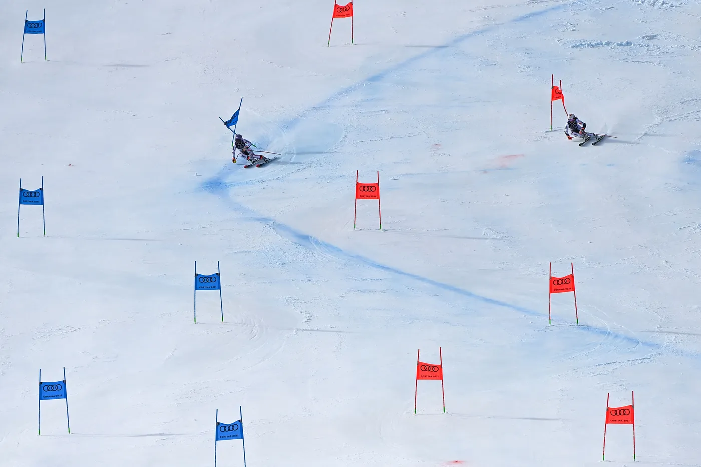

THE SKI


Arnold Lunn was an Englishman who found refuge in Switzerland, close to the mountains which for him was one of the most beautiful things in the world. Arnold Lunn is the inventor of modern skiing and the inventor of championships because he enjoyed organist ski races in Switzerland as a young man. Of course the Nordic people had been skiing for much longer but for them it was a necessity whereas for Arnold it was much more. He is considered to have invented, in 1922, the slalom and downhill, disciplines adopted by the International Ski Federation in the 1930s.

The first alpine skiing competition, a kind of rudimentary downhill race, took place in Oslo around 1850. A few decades later, skiing won over the rest of Europe and the United States of America, where miners organised ski competitions for winter entertainment. The first slalom was held in Mürren (Switzerland) in 1922, and two years later the race that would become the first Olympic Alpine skiing event was held.